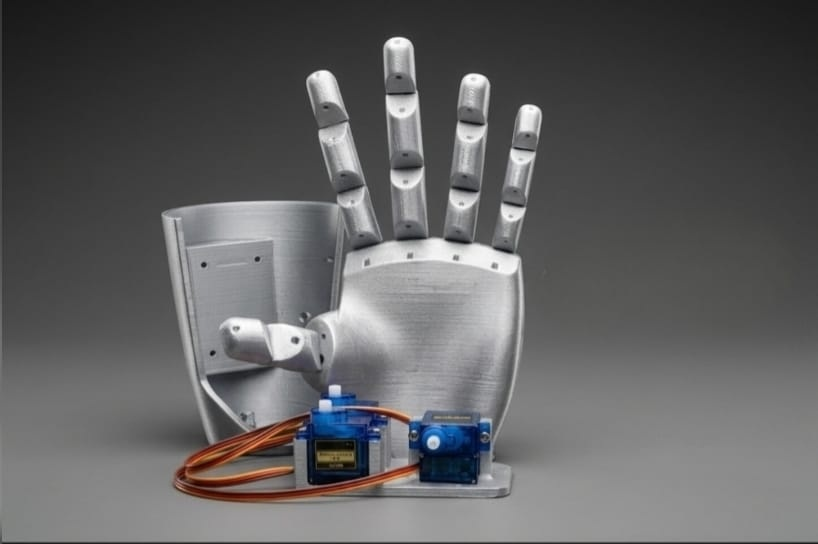
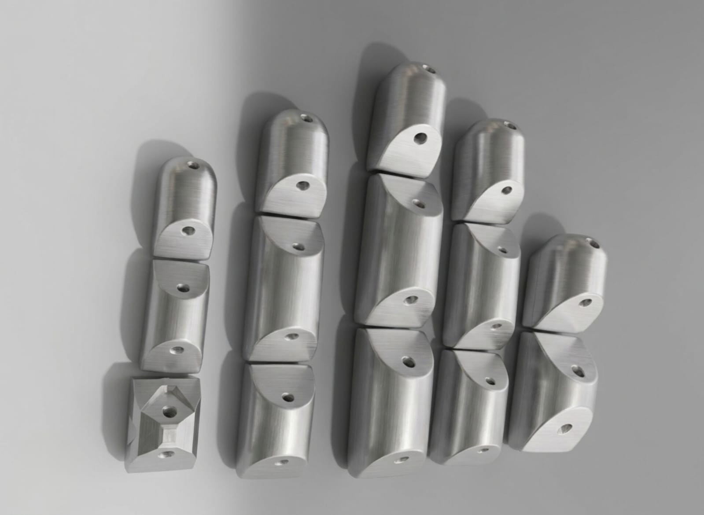
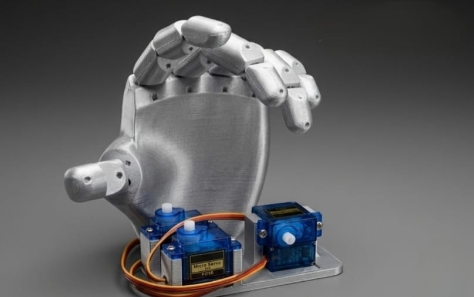

Brindamos información acerca de nuestro proyecto en el que trata sobre la creación de una prótesis de mano.

Innovación tecnológica con corazón humano

Diseño preciso y materiales accesibles

Control mediante sensores y motores
 DEXTER
DEXTER